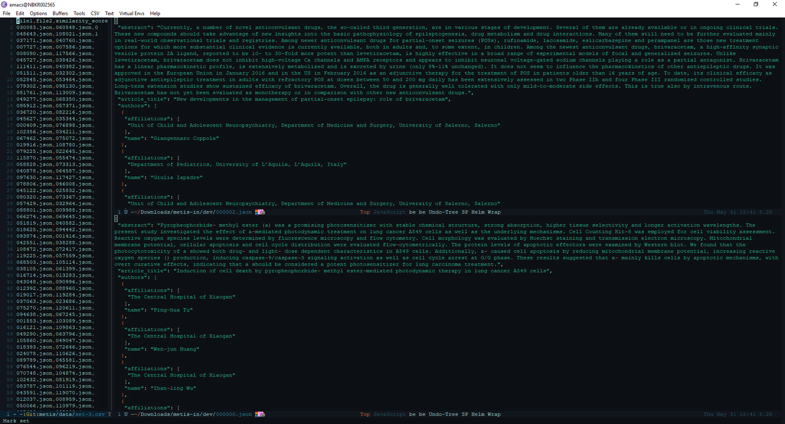

Automating custom workflow in Emacs
| Petru Rebeja
Due to the lack of human resources in a research project I'm involved the team decided to take upon itself the semantic comparison of 3000 pairs of papers from the medical domain.
Each paper is a json file with structured contents of the publication like in the picture below:

Since we also want to do at least some cross-validation we decided that each member of the team should compare 2000 pairs of publications so that each pair will be compared by two out of three persons from the team.
So we split the 3000 publication pairs into 3 sets which were saved into csv files with the following structure: file1, file2, similarity_score; where file1 and file2 are the names of the files and similarity_score is to be filled with the semantic similarity score.
My first idea was to have Emacs split into three windows to allow for both registering the score and a side-by-side comparison of files: 
For each pair of files from the left window I would:
- Copy the name of the first file using
C-a C-SPC C-u 2 M-f M-w - Go the the top window on the right using
C-x o 2(I'm usingace-windowthus after pressingC-x oI can select the window to switch to by pressing it's number key) - Open the file using
C-x C-fthen navigating to the directory and yanking the file name at the end - Move back to the first window using
C-x o 1 - Copy the name of the second file by first moving over the first comma with
C-fthenC-u 2 M-f M-w - Go to the bottom window on the right using
C-x o 3 - Repeat step 3
- Repeat step 4
- Compare publications and register score in
similarity_scorecolumn
Although this workflow seems quite laborious due to so many steps I've gotten used quite rapidly (from the second pair) to it and managed to form some sort of temporary muscle memory for opening files in the sense that I was doing that on full auto-pilot, without thinking that I'm opening files.
However, there was a problem with this workflow: the directory in which the files to be compared are located contains around 100 K such json files and on my 5400 RPM hard-disk it took what seemed like forever to scan the directory when pressing C-x C-f in order to give me the benefit of autocompletion which I did not need because I already knew the files names. So basically for each pair of publications I was stuck waiting twice for the directory to be scanned.
And then I got an idea: I already knew the file names; the directory containing them is the same so wouldn't it be faster to send the full path (obtained by concatenating file name and directory path) to find-file function instead of waiting for a directory scan?
I switched to the *scratch* buffer and evaluated a find-file call with the full path of a file and of course, the file was loaded instantly.
So I decided to take it a bit further: Can't I, while on a line in left window open the files on that line in the other two windows?
Of course I can because Emacs is awesome. All I need to do is write some code lisp code that will do what I want.
Fisrt things first, I declared a (global) variable to hold the full path to the directory containing the files:
(defvar *compare-publications-dir*
"<directory-path>"
"The location of files to compare.")
Then I created a function to get the whole line from the csv file:
(defun get-current-line()
(progn
(beginning-of-visual-line)
(let ((start (point)))
(end-of-visual-line)
(buffer-substring-no-properties start (point)))))
This function moves the point to the beginning of the line by calling (beginning-of-visual-line) then saves the position in a local variable start and moves to the end of the line via a call to (end-of-visual-line). In the end it returns the substring which is between start position and the position returned by (point) function.
Having the line of text I need to:
a) Split the line by ,
b) Store first and second parts of the line into two variables called file-1 and file-2
c) Move to the top-right window
d) Concatenate the values of *compare-publications-dir* and file-1 and pass the result to (find-file-readonly) (I don't want to accidentally change the files being compared)
e) Move to the bottom-right window
f) Repeat d) with file-2 instead of file-1
g) Return to the left window
This was also implemented with a function which can be called interactively via M-x:
(defun compare-publications()
(interactive)
(let* ((files (csv-split-string (get-current-line) ","))
(file-1 (car files))
(file-2 (car (cdr files))))
(other-window 1)
(find-file-read-only (concat *compare-publications-dir* file-1))
(other-window 1)
(find-file-read-only (concat *compare-publications-dir* file-2))
(other-window 1)))
And that's it. After calling eval on the functions above I have an automated workflow. Now, to compare two files, I just navigate to a line in the csv file and from there type M-x compare-publications. The only thing left to do manually (beside the comparison itself) is to press the key for the similarity_score of files from that line.
Comments
Comments powered by Disqus